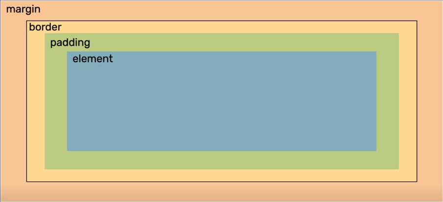
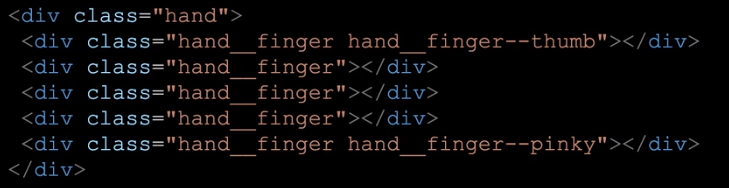

Reguły CSS:
- Hierarchia: ( !important ; style="" ); #name ; .name ; element - w nawiasie lepiej nie używać
- Kod czyta się od góry - przy takich samych selektorach i znacznikach to co jest niżej wypisane w stylach będzie ostatecznym stylem
- Dwa style w jednym selektorze np. dwa kolory - przy takich przypadkach dolny jest docelowym
- Najlepiej zawsze dodawać klasy do wszystkich elementów
- Nazywamy klasy po angielsku zgodnie z przeznaczeniem z użyciek kebab-case
- Jednostki: 0 możemy zapisać bez jednostki/ px - piksele, %-procent, vw-viewport width/parametr całego "okna", vh-viewport height/parametr całego "okna"
- Jednostka ułamkowa przy gridach: fr - 1fr/4 2fr/4 itp.
-
Warto dodać plik bazowy stylów do swojego pliku -
normalize.css
+ dopiska do swojego cssa: html {box-sizing: border-box;}
*, *:before, *:after{box-sizing:inherit;}
CSS = Cascading Style Sheets
CSS odpowiadają za prezentację. Wpywają na wygląd elementów HTML na ekranie, wydrukach itp. Pliki zawierające kod CSS mają rozszerzenie .css
CSS można stylować zgodnie z poniższym box modelem:
BEM:
block__element--modifier
Opisanie klas na zasadzie dłoni -> .hand -> .hand__finger -> .hand__finger--pinky itp.
Składnia CSS to reguły:
selektor {
właściwość: wartość;
}
linkowanie stylu <link href="style.css" rel="stylesheet" type="text/css">
Poznane selektory:
- #id. class element - selektory stylów
-
.name {
właściwość: wartość;
} - selektor klasy -
#name {
właściwość: wartość;
} - selektor id -
selektor podsekcja {
właściwość: wartość;
} - stylowanie danego elementu w wybranym selektorze - !important - do zastosowania w ostateczności jako dopiska do stylu / nadpisuje pozostałe style elementu wybranym stylem
- display:block lub display:inline - elementy ustawiają się jako bloki pod sobą lub w linii obok siebie
- display:inline-block - dodatkowe właściwości
- width:/height: - szerokość wysokość elementów / zawsze dodaj jednostkę
- max-width: / max-height: - maksymalne parametry elementów / nie robi się pasek przewijania
- min-width: / min-height: - minimalne parametry elementów
- overflow: hidden; - wszystko co jest poza divem jest schowane/odcięte
- overflow: auto; - jako invisible + dodaje scroll w divie
- padding: jednostka - wewnętrzny margines / można wypisać jednostki w kolejności top, right, bottom, left - jak w zegarku / lub parami lustrzanie
- border: jednostka / np. solid / color - obramowanie
- border-radius: jednostka - zaokrąglenie narożników
- margin: jednostka - odsunięcie od innych elementów - margines / marginesy się sumują
- margin: __px auto - margines automatyczny - wyśrodkowany
- box-sizing: border-box /content-box - element dostosowuje się do wymiarów danych elementów / border mieści się w wymiarze
- position: static; / relative; / absolute; - absolute przyjmuje pozycje z poniższych znaczników (jak współrzędne)
- top: jednostka / left / right / bottom - pozycja
- z-index: liczba; - hierarchia - wyższy jest bliżej ekranu czyli nad / pod
- position: fixed; - zafiksowany / przyklejony np. dla nagłówków
- postition: sticky; - element przeklejony który wyświetla się cały czas przy scrollowaniu /nie może mieć overflowa
- float: - float nie służy do budowania layoutów - flout służy do opływania elementów / np. float: left -jestem po lewej a treść opływa mnie po przeciwnej czyli prawej
- clear: both - czyści z dwóch stron / dopasowuje do największych parametrów
- color: inherit - do stosowania w podglądzie strony - pozwala zmienić parametr na dziedziczony z poziomu wyżej
- list-style(-type): - ustawienie stylu listy / np. zmienia kółka na kwadraty
-
display: flex; - flexbox - do ustawienia elementów
wyśrodkowanych? // flex-direction: row / column / row-reverse /
column-reverse
// flex-wrap: nowrap / wrap / wrap-reverse
//flex-flow: row nowrap / <flex-direction> <flex-wrap>
//justify-content: - ustawianie elementów wzdłuż osi flex-direction
//align-content: - ustawianie wierszy/kolumn wzdłuż osi przeciwnej do flex-direction
//align-items: - ustawienie elementów wzdłuż osi przeciwnej do flex-direction
//align-self: - ustawienie elementu wzdłuż osi przeciwnej do flex-direction
//order: - kolejność
//flex-grow: - liczba/proporcja większa
//flex-shrink: - propocja mniejsza
//flex-basis: - podstawowe parametry/wielkości
podsumowanie= flex: flex-grow flex-shrink flex-basis -
background-image: url('sciezka-do-pliku'); - tło obrazek
//background-position: - ustawianie tła względem elementu, które to tło dostaje
//background-repeat: - powtarzanie tła / może być jak pattern
//background-attachment: - np. tło pozostaje w miejscu , scrolluje się razem z treścią itp.
//background-origin: - miejsce rozpoczęcia liczenia position
//background-clip: - wskazanie miejsca w którym tło powinno zostać cięte
// rgb(a) - tło półprzezroczyste / wartość na końcu
//background-size: - wielkośc tła (jak duże ma być)
gradienty: https://cssgradient.io/ -
display: grid; - do ustawienia elementów - container
grid-template-columns:<wartość po spacji> - tworzenie kolumn
grid-template-rows:<wartość po spacji> - tworzenie wierszy
repeat(ileRazy, wartość) - powtórzenie zamiast wypisywanie wartości
column-gap: wartość - przerwy między kolumnami gridu
row-gap: wartość - przerwy między wierszami gridu
minmax(minWartość, maxWartość) - wymiary kolumn czy wierszy
grid-template-areas: - budowanie siatki layoutu
grid-area: nazwa obszaru / row-start , col-start , row-end , col-end
grid-row-start/grid-row-end: numer/[nazwa]/span - wskazanie na siatce początku i końca
grid-column-start/grid-column-end: numer/[nazwa]/span - wskazanie na siatce początku i końca
z-index - przykrywanie elementów -
media queries - dostosowanie strony do różnych urządzeń
@media screen/print/all ... - media type
min-with/max-width/color/aspect-ratio/orientation ... - parametry do których chcemy dostosować media style
and/not/, - łączenie
np. @media screen and (max-width: 600px){}
-
pseudoelementy - tworzenie treści w CSS
content:"" - treść
element::before treść elementu element::after
.class::before {content:"";} - dodaje na początku wartość do wszystkich elementów opisanych daną klasą
.class::after {content:"";} - dodaje na końcu wartość do wszystkich elementów opisanych daną klasą
imprezka najczęściej używana do elementów dekoracyjnych
selektor:hover/visited/focus - pseudoklasa
selektor:first-child/last-child - dla wybranego "dziecka"
selektor:not(selektor) - zaprzeczenie
https://developer.mozilla.org/en-US/docs/Web/CSS/Pseudo-classes -
SASS
$nazwazmiennej: wartość - zmienna
@mixin @include - określenie stylu dla elementu i zainkludowanie go w danej klasie
@extend - zaciągnięcie styli z danej klasy do wybranej klasy
& - parent selector - @import "źródło" - importowanie modułów/plików
-
:root {} - pseudoselektor - główny węzeł dokumentu
--nazwazmiennej - zmienna
:root{--zmienna: wartości}
var(--zmienna); - pobranie wartości zmiennej